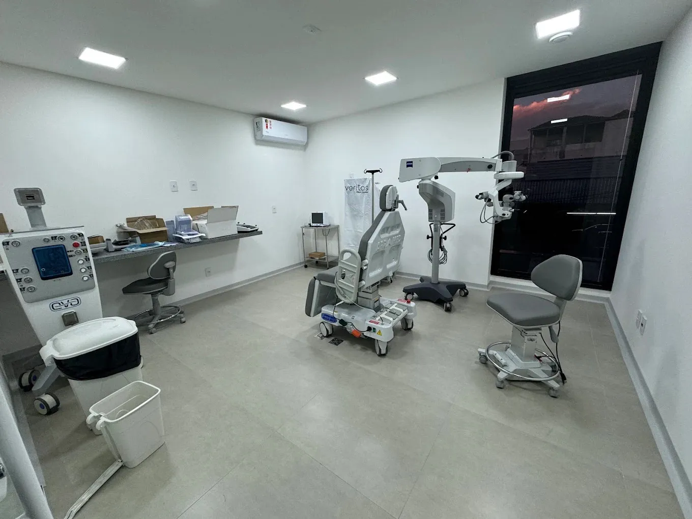
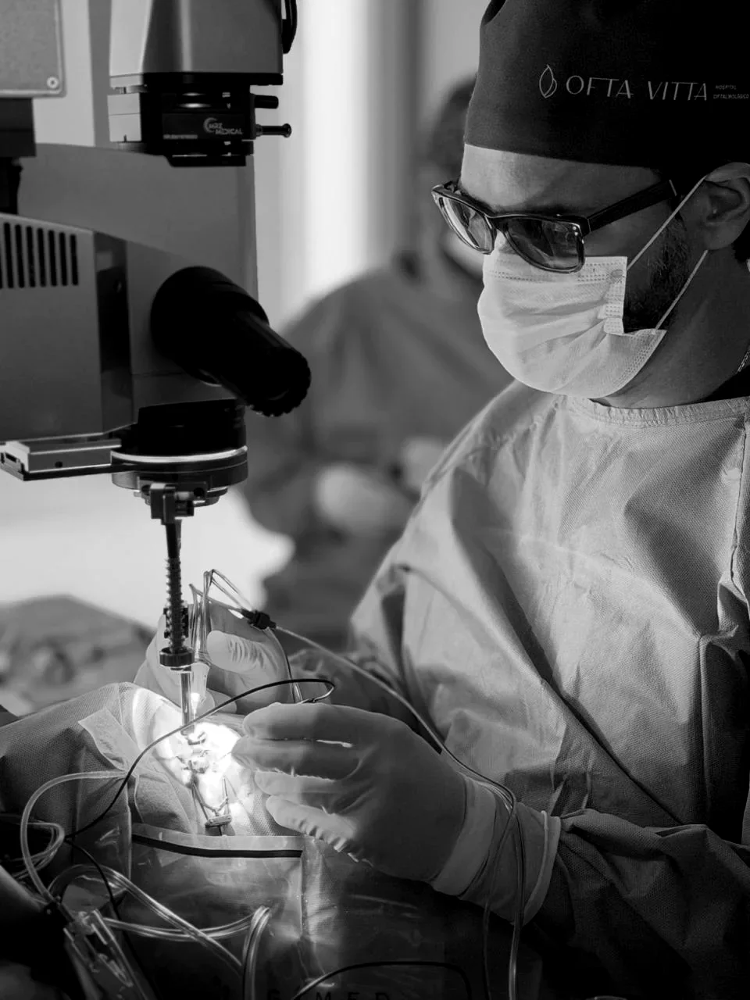
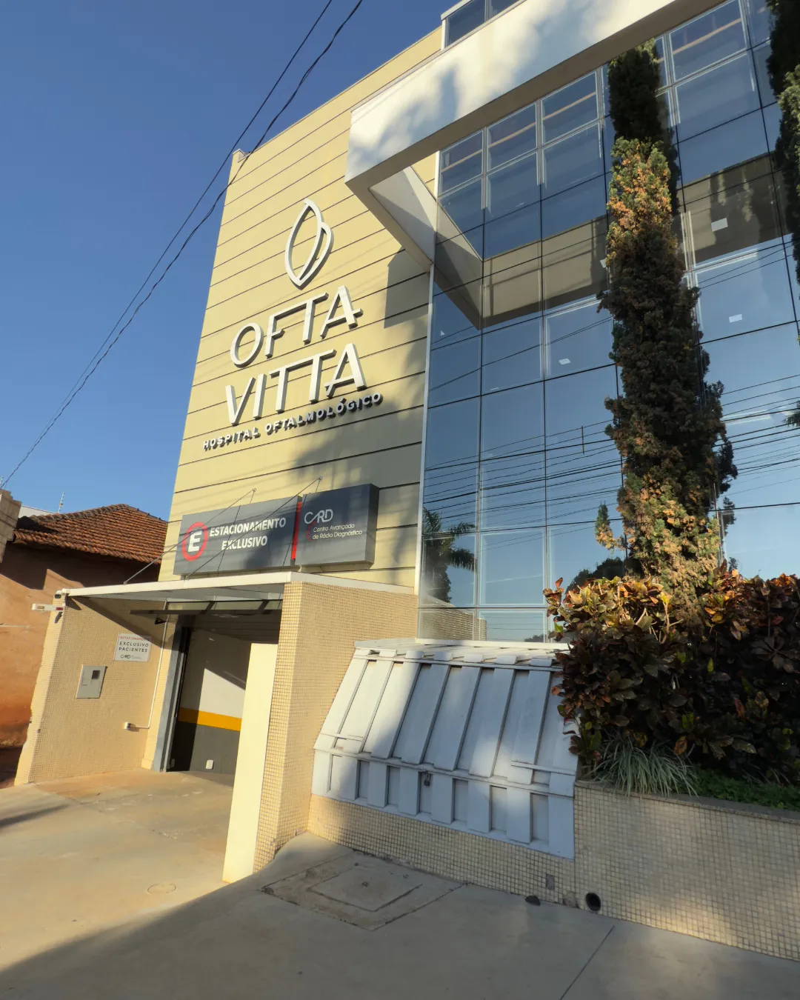
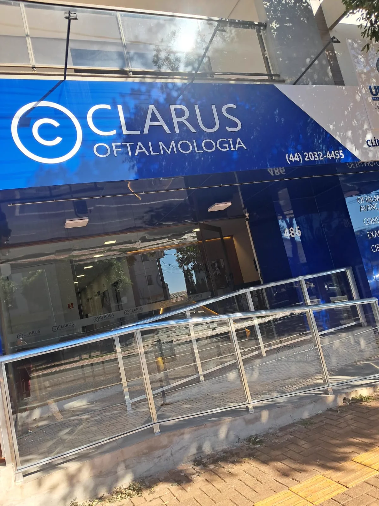

A retina quase nunca dá aviso. Veja quais sinais não podem esperar.
O Dr. Paulo Igor Rauen explica, em palavras simples, como as doenças da retina começam, quem precisa acompanhar e o que fazer diante de cada sinal.
O vídeo tem som. Se preferir ler, o mesmo conteúdo está explicado logo abaixo.
Sombra, cortina ou perda súbita de visão? Não espere terminar o vídeo. Pode ser descolamento de retina, e casos urgentes têm prioridade de avaliação.
Como cada sinal aparece na sua visão.
A retina é como o filme de uma máquina fotográfica: é ela que transforma a luz em imagem. Toque em um sinal para ver como ele costuma aparecer e o que fazer.
Simulação ilustrativa, criada para explicar os sintomas. Para testar em casa: com os óculos de leitura, cubra um olho, olhe para o ponto do centro da grade em “Visão normal” e repare se alguma linha parece torta ou se falta algum pedaço. Repita com o outro olho. O teste não substitui o exame.
Quem precisa acompanhar a retina, mesmo sem sentir nada.
Muitas doenças da retina evoluem em silêncio. Quando o sintoma aparece, o tempo já está contando. Nesses quatro grupos, o exame de rotina é o que permite tratar cedo.
- Quem tem diabetesO diabetes pode danificar os vasos da retina sem dar sinal. Estima-se que cerca de 1 em cada 3 pessoas com diabetes tenha algum grau de retinopatia.
- Quem passou dos 60 anosA degeneração macular é a principal causa de perda da visão central depois dos 60. O diagnóstico cedo ajuda a estabilizar a visão.
- Quem tem miopia altaO olho míope é mais alongado, e a retina fica mais fina e sujeita a roturas e descolamento.
- Quem tem casos na famíliaHistórico familiar de doença da retina é motivo para manter um acompanhamento regular.
O que muita gente pensa sobre a retina, e o que de fato acontece.
São ideias comuns, e é por causa delas que muitos casos chegam tarde ao especialista.
- “Enxergo bem, então a minha retina está bem.”Muitas doenças da retina não dão sintoma no começo.
A retinopatia diabética e a degeneração macular podem evoluir por muito tempo antes de afetar a visão. O exame enxerga antes de você sentir.
- “Moscas volantes são sempre normais.”As antigas costumam ser. As novas merecem atenção.
Se surgirem de repente, em grande quantidade ou junto com flashes de luz, podem indicar uma rotura na retina. Nesse caso, procure avaliação no mesmo dia.
- “Meu diabetes está controlado, então os olhos estão protegidos.”O controle ajuda muito, mas não dispensa o exame.
Quem tem diabetes precisa examinar o fundo do olho com regularidade, mesmo com a glicemia em ordem e sem sentir nada.

Do exame de imagem à cirurgia, no mesmo cuidado.
Nem todo tratamento da retina é cirúrgico. O plano é individual e explicado com clareza antes de qualquer decisão.
Mapeamento e OCT
Exames de imagem que mostram a retina em detalhe, camada por camada. São a base do diagnóstico e do acompanhamento.
Injeções intravítreas
Medicação aplicada dentro do olho para tratar degeneração macular úmida, edema macular diabético e oclusões venosas. O olho é anestesiado, e a aplicação dura segundos.
Laser de retina
Trata roturas e áreas doentes da retina, muitas vezes evitando cirurgias maiores.
Vitrectomia
Microcirurgia para descolamento de retina, buraco macular, membrana epirretiniana e hemorragia vítrea, entre outras condições.
O que muda quando o seu caso fica com um especialista em retina.
O cuidado com a retina depende de exame de imagem, de decisão no tempo certo e de acompanhamento. Veja como isso funciona na prática.
| Como é feito | O que isso muda para você |
|---|---|
| Exames de imagem, como OCT e mapeamento | Alterações pequenas aparecem cedo, quando ainda há mais opções de tratamento. |
| Tratamento clínico, laser, injeções e cirurgia | O mesmo especialista acompanha o seu caso em cada etapa, sem recomeçar do zero. |
| Prioridade para sinais de urgência | Sombra, cortina ou perda súbita de visão são avaliadas com prioridade. |
| Retorno ao médico que encaminhou | O seu oftalmologista continua informado sobre o seu caso. |
| Atendimento em três cidades | Menos estrada para você e para quem te acompanha nas consultas. |

Formado para cuidar da parte mais delicada do olho.
O Dr. Paulo dedica a sua prática às doenças da retina e do vítreo, do tratamento clínico ao cirúrgico, e também opera catarata. Cada etapa é explicada com calma, para você e para a sua família.
Foi encaminhado por outro oftalmologista? É o caminho mais comum. Traga os seus exames e o pedido de encaminhamento.
- MedicinaUniversidade Federal de Santa Maria (RS)
- Residência em OftalmologiaHospital dos Olhos de Londrina
- Especialização em vítreo e catarataFormação cirúrgica
- Retina clínica e cirúrgicaUSP de Ribeirão Preto
- Título de especialista em retinaRegistro de Qualificação de Especialista
Salvando vistas, transformando vidas.
O que os pacientes contam.
Avaliações reais, publicadas no Google por pacientes do Dr. Paulo.
7 sinais de que a sua retina pede atenção.
A retina costuma dar poucos sinais até que a situação já avançou. Marque o que você tem notado. É um ponto de partida, não um diagnóstico.
Marque os sinais. O índice mostra o quanto uma avaliação com um especialista em retina é prioritária para você.
Esta autoavaliação tem caráter apenas informativo e não substitui a consulta médica. O diagnóstico depende de exame presencial. Diante de perda súbita de visão, procure atendimento imediatamente.
Avaliação da retina com o Dr. Paulo.
Uma consulta para examinar a retina em detalhe, entender o que está acontecendo e definir o acompanhamento ou o tratamento. Se você foi encaminhado, traga o pedido e os exames que já tiver.
Sinal de urgência? Sombra, cortina ou perda súbita de visão: avise na primeira mensagem ou ligue para (44) 99123-0861.
- Conversa sobre os seus sintomas, o seu histórico e os exames anteriores
- Exame do fundo do olho com as pupilas dilatadas
- Exames de imagem, como OCT e mapeamento de retina, quando forem indicados
- Explicação do diagnóstico e das opções de tratamento
- Plano de acompanhamento, com a frequência certa para o seu caso
Como agendar a sua avaliação.
- Chame no WhatsAppConte o que está sentindo e desde quando. Se for um sinal de urgência, avise logo na primeira mensagem.
- Escolha a cidade e o diaUmuarama, Campo Mourão ou Palotina. Se já tiver exames ou um encaminhamento, leve no dia.
- Faça a avaliaçãoExame da retina com imagem. Você sai da consulta entendendo o seu caso e os próximos passos.
Chamar a equipe no WhatsApp Ou ligue: (44) 99123-0861. Segunda a sexta, 8h às 18h. Sábado, 8h às 13h.

UmuaramaHospital OftaVitta
Av. Celso Garcia Cid, 3542, 2º e 3º andar- Campo MourãoOrbe Hospital de Olhos
Av. Manoel Mendes de Camargo, 2331, Centro 
PalotinaClarus Oftalmologia
Av. Independência, 486, Centro
As datas de atendimento variam por cidade. Confirme a próxima data pelo WhatsApp antes de se deslocar.
Dúvidas comuns sobre a retina.
Fui encaminhado pelo meu oftalmologista. Como funciona?
O encaminhamento é o caminho mais comum. O oftalmologista geral identifica um achado na retina e indica a avaliação com o especialista. Traga os seus exames e o pedido. O Dr. Paulo dá continuidade à investigação, define a conduta e mantém o seu médico informado.
Preciso de encaminhamento para marcar?
O encaminhamento é o caminho mais comum, mas a equipe orienta você pelo WhatsApp mesmo sem ele. Se já tiver exames, leve no dia da consulta.
A injeção no olho dói?
É natural ter receio, mas o procedimento é mais tranquilo do que parece. O olho é anestesiado com colírios, a aplicação dura segundos e o desconforto costuma ser mínimo. É um dos tratamentos mais realizados na oftalmologia.
Quem tem diabetes precisa acompanhar a retina?
Sim. O diabetes pode afetar a retina de forma silenciosa e é uma das principais causas de perda de visão em adultos. O acompanhamento regular permite tratar antes que a visão seja comprometida.
O tratamento é sempre cirúrgico?
Não. Muitas doenças da retina são tratadas com medicações, laser ou injeções. A cirurgia é indicada em casos específicos. A conduta é sempre individual, definida depois da avaliação completa.
E se for urgência?
Sombra ou cortina na visão e perda súbita de visão exigem atendimento rápido. Chame imediatamente pelo WhatsApp ou ligue para (44) 99123-0861. Casos urgentes têm prioridade de avaliação.
Como funciona o agendamento, e quais são as formas de atendimento?
Pelo WhatsApp. A equipe informa as datas em cada cidade, as formas de atendimento disponíveis e o que levar no dia da consulta.
Cuidar da retina no tempo certo faz diferença.
Se você notou algum sinal, ou faz parte de um grupo que precisa de acompanhamento, converse com a equipe do Dr. Paulo.